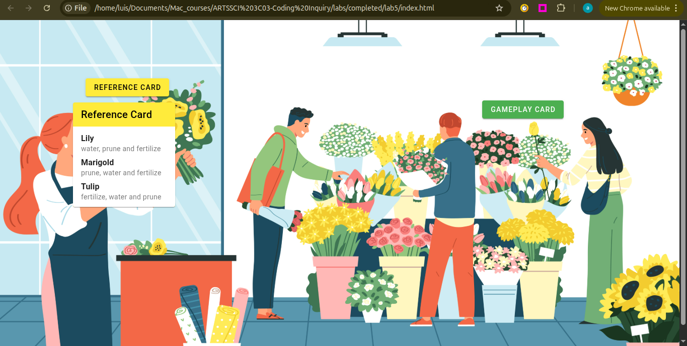
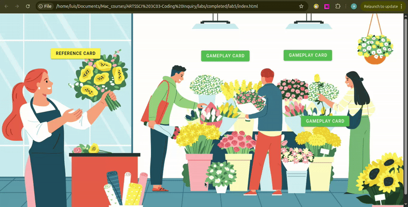
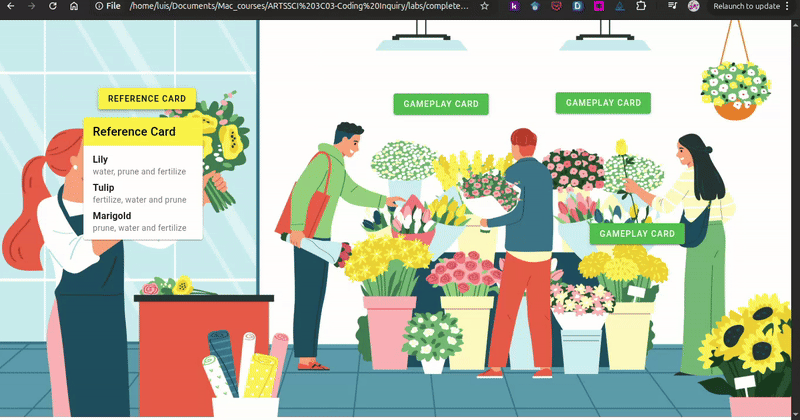
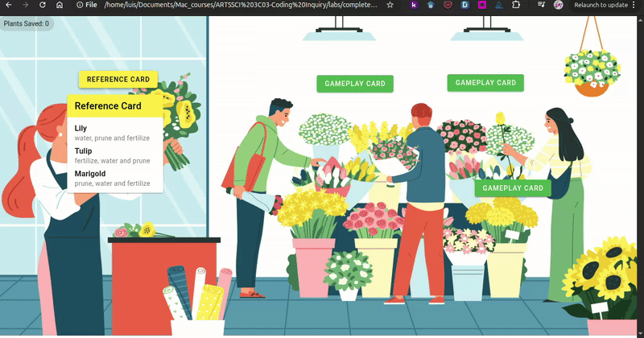

Lab 5: Scaling Your Point-and-Click Game
General Description
In Lab 4, you built a single-subject interactive game. In this lab, you will learn how to
scale your game by moving from individual variables to Arrays of Objects.
By the end of this lab, your game will handle multiple subjects simultaneously. You will also track
game progress and provide real-time feedback to the player.
Learning Objectives
- Organize complex data using Arrays of Objects to represent multiple game subjects.
- Use
v-forloops to dynamically generate buttons and cards. - Implement State Management by using parameters to track a selected subject and handle individual gameplay logic.
Table of Contents
- Reusing and Extending Lab 4
- Expanding Your Data Through Arrays and Objects
- Dynamic Reference Cards
- Dynamic Gameplay Cards
- Dynamic Validation & State Reset
- Track Game Progress
- Optional Challenge: Completing the Player Experience
- Wrap Up & Sharing Your Work
Reusing and Extending Lab 4
In this lab, you will continue working on the index.html and app.js files you started last week. You don't need to create a new folder or new index or app files since you will expand the code you wrote in Lab 4.
- Open your Lab 4 folder in VS Code editor: File > Open Folder.
- Open your
app.jsandindex.htmlfiles.
Expanding Your Data Through Arrays and Objects
In Lab 4, you used individual variables (like plantName) to handle a single
subject.
To scale our game, we need to group all the data for multiple subjects into an Array
of Objects.
Expanding Your Collection
- Identify a couple more subjects (e.g., more plants) to add to your game for a total of 3 - 4 subjects.
- Brainstorm a unique 3-step action sequence for each new subject. (Example: If a Lily needs "Water, Prune, Fertilize," perhaps a Marigold needs "Prune, Water, Fertilize").
- Find the coordinates using the
findCoordinatesfunction you created in Lab 4 to determine where the buttons and cards for your new subjects should appear on your background image. Write down the X% and Y% for each button and card. Refer to Lab 4, section 6.2 Positioning the Buttons and Cards to complete this step.
Organizing Data with an Array of Objects
You will now create a single array called subjects that holds all the game
data you defined in the previous step.
- Open your
app.jsfile. - Follow the steps from Lab 3, Section 2 to wrap your variables into an Array of Objects.
- Ensure every object in your array includes the same fields, including the x and y coordinates from the step above. See example below:
const subjects = [
{ plantName: "Lily",
actionReference1: "water",
actionReference2: "prune",
actionReference3: "fertilize",
buttonX: "49.89%",
buttonY: "18.34%",
cardX: "49.77%",
cardY: "24.35%"
},
{ plantName: "Marigold",
actionReference1: "prune",
actionReference2: "water",
actionReference3: "fertilize",
buttonX: "80%",
buttonY: "70%",
cardX: "79.87%",
cardY: "79.51%"
},
{ plantName: "Tulip",
actionReference1: "fertilize",
actionReference2: "water",
actionReference3: "prune",
buttonX: "60%",
buttonY: "20%",
cardX: "75.06%",
cardY: "56.70%"
}
]
1. Once you have created this array, you can delete the old single variables (like
const plantName = "Lily") from your code. They
are now
safely stored inside your array.
2. Update your
return block to include the name of your collection (e.g.,
subjects) and remove any
old variables you deleted.
Dynamic Reference Card
In Lab 4, your Reference Card only showed the information for one subject. Now that you
have a
collection of subjects, you need a way to display all of them at once. To achieve this, you will
include a v-list in your v-card and use v-for to loop
over
your array of objects.
Using v-list and v-for
- Locate your Reference Card
<v-card>inindex.html. - Replace the
v-cardelements withv-listand its elements:v-list-item,v-list-item-title, andv-list-item-subtitle. Follow the example below: - Apply a
v-forloop to thev-list-itemto render a separate row for each of your objects. Refer to Lab 3, step 3. Generating Cards with the v-for Loop to complete this step. - Save and Open your Reference Card in the browser. You should now see a list of all your subjects and their secret action sequences!
<v-card>
<v-card-title>Reference Card</v-card-title>
<v-list>
<v-list-item>
<v-list-item-title>
{{ plantName }}
</v-list-item-title>
<v-list-item-subtitle>
{{actionReference1 }}, {{ actionReference2 }} and {{ actionReference3 }}
</v-list-item>
</v-list>
</v-card> app.js return block
to make
sure subjects is being exported correctly.
Dynamic Gameplay Cards
In this section, you will generate multiple gameplay buttons and cards with dynamic open/close states and location coordinates. To achieve this, you will perform four key upgrades:
- Move the
showGameplayCardvariable inside each individual subject object. - Update your
toggleOpenCloseGameplayCardfunction to use parameters so it knows which specific subject is being clicked. - Use a
v-forloop to automatically generate buttons and cards for every subject. - Apply dynamic
styleto place each button and card exactly where it belongs on the game board.
Move the showGameplayCard Variable Inside Each Object
- In app.js, locate the variable you created to open/close the gameplay card
(it might be named
showGameplayCardor something similar). - Add this variable to all of your objects, to control if they open/close individually. Follow the example below for each object:
{
plantName: "Lily",
actionReference1: "water",
actionReference2: "prune",
actionReference3: "fertilize",
buttonX: "49.89%",
buttonY: "18.34%",
cardX: "49.77%",
cardY: "24.35%",
showGameplayCard: ref(false)
}
Update the toggleOpenCloseGameplayCard Function to Use
Parameters
In Lab 4, you should also have created a function that toggles the true/false state of the
showGameplayCard variable above. You are now going to modify
that
function to identify what subject the user has clicked and open the card accordingly.
- In app.js, locate the
toggleOpenCloseGameplayCard()function (it might have a different name in your code). - Update this function to accept a
parameter to pass the
specific subject when a given gameplay button is clicked. Call this parameter
something like
subject. Follow example below:function toggleOpenCloseGameplayCard(subject) - Modify the
if-elsestatement inside that function, by adding the parameter followed by the dot notation to access theshowGameplayCardvalue of the clicked subject. Follow the example below:if (subject.showGameplayCard.value == false) { subject.showGameplayCard.value = true } else { subject.showGameplayCard.value = false }
Use v-for to Generate Buttons and Cards for Each Subject
In previous labs you have used v-for to generate multiple copies of a single component,
like you did with the v-card. In this step you will generate multiple buttons and cards
with the same v-for. To achieve this, you will start by wrapping your gameplay
v-btn and v-card inside a container using v-sheet.
- In your index.html, locate your gameplay button and card, and wrap them inside a
v-sheetcontainer. Follow the example below: - Now, apply a
v-forto thev-sheetto render a separate button and a card for each of your objects. Refer to Lab 3, step 3. Generating Cards with the v-for Loop to complete this step. - Finally, inside your gameplay
v-btn, locate thetoggleOpenCloseGameplayCardfunction call. Update it to include the parameter that represents your object. See example below:
<v-sheet>
<!-- YOUR EXISTING BUTTON CODE HERE -->
<!-- YOUR EXISTING CARD CODE HERE -->
</v-sheet>
v-sheet is a generic container for
content and Vuetify components.
More info here: https://vuetifyjs.com/en/components/sheets/#guide.
<v-btn @click="toggleOpenCloseGameplayCard(subject)">
v-for loop.
If your loop says
v-for="subject in subjects", you must pass subject.
If you named it v-for="item in subjects", then you would pass item.
Apply Dynamic Style to Place Gameplay Buttons and Cards
At the beginninig of this lab, you added buttonX, buttonY,
cardX, and cardY to each of your objects. In this step, you will apply
those
coordinates to the gameplay v-btn and v-card. You
will use a "two-style" approach,
using a standard style for the static layout rules and a
:style for the dynamic layout rules (i.e., the objects' coordinates).
- In your gameplay
v-btn, start by splitting thepositionandz-indexfrom last week, into onestylecommand. Then move theleftandtopinto another one. See example below:<v-btn style="position:absolute; z-index: 1;" style="left: 70.99%; top: 23.73%;">Gameplay Card</v-btn> - Add a colon
:to thestylecommand containing thetopandleft. This tells Vuetify that the values inside are no longer just text, but are now data coming from your objects in app.js.<v-btn style="position:absolute; z-index: 1;" :style="left: 70.99%; top: 23.73%;">Gameplay Card</v-btn> - Replace the hard-coded coordinates with the coordinates from your
object using dot notation (e.g.,
subject.buttonXoritem.buttonX).<v-btn style="position:absolute; z-index: 1;" :style="left: subject.buttonX; top: subject.buttonY;">Gameplay Card</v-btn> - Finally, because we are calling multiple
instructions at a time, we use curly braces { } and
separate our properties with commas instead of semicolons. See example below:
<v-btn style="position:absolute; z-index: 1;" :style="{ left: subject.buttonX, top: subject.buttonY }">Gameplay Card</v-btn> - Repeat steps 1-4 to apply the object's
cardXandcardYcoordinates to yourv-card.

Dynamic Validation & State Reset
In this section you will upgrade the result variable and
validateResult function to check against the action references of the specific
subject being clicked. To achieve this, you will perform two upgrades:
- Move the
resultvariable inside each individual subject object. -
Update your
validateResultfunction to use parameters so it knows which specific subject is being clicked and validated. - Reset the user actions before the user clicks new actions.
Move the result Variable Inside Each Object
- In app.js, locate the variable that stores your card result. You created this variable last week in lab 4.
- Move this variable to your objects to control the validated results individually. See example below:
{
plantName: "Lily",
actionReference1: "water",
actionReference2: "prune",
actionReference3: "fertilize",
buttonX: "49.89%",
buttonY: "18.34%",
cardX: "49.77%",
cardY: "24.35%",
showGameplayCard: ref(false),
result: ref(null)
}
Update the validateResult Function to Use Parameters
-
Locate your
validateResultfunction (it might have a different name in your code). - Update this function to accept a parameter to pass the specific subject when the "validateResult" button of a given gameplay card is clicked. Call this parameter something like subject. Follow example below:
- In the
if-elsestatement of your function, use dot notation to compare the user's actions against the action references inside the subject. Then, use dot notation again to update that specific subject's result message. See the example below: - In your
v-cardinside index.html, find the "Validate Result" button. - Pass the alias from your
v-forloop (e.g., subject or item) into the function call.
function validateResult(subject)
if (userAction1.value === subject.actionReference1 &&
userAction2.value === subject.actionReference2 &&
userAction3.value === subject.actionReference3) {
subject.result.value = "Your plant is thriving!"
} else {
subject.result.value = "Your plant withered."
}
<v-btn @click="validateResult(subject)"> Validate result </v-btn>
v-for alias and the dot notation in
result in the v-card to
display
the result message tied to that specific object. See example below:
<v-card-text> {{ subject.result }} </v-card-text>
Reset User Actions Before User Clicks New Actions.
In this step, you will ensure the previous actions clicked reset before the user clicks new actions.
- In app.js, locate your
toggleOpenCloseGameplayCardfunction. - Inside the
ifsection of your toggle function (the part that sets the card to true), reset the user action variables tonull. This ensures that every time a user opens a card, their previous choices are cleared. Follow the example below:
function toggleOpenCloseGameplayCard(subject) {
if (subject.showGameplayCard.value == false) {
subject.showGameplayCard.value = true;
// Reset the choices to null only when opening the card
userAction1.value = null;
userAction2.value = null;
userAction3.value = null;
} else {
subject.showGameplayCard.value = false;
}
}

Track Game Progress
In this step, you will add a counter to keep track of how many times the result valus has been true.
Create the Counter Variable
- In app.js, create a new reactive variable called
savedCount. - Set its initial value to
0.
const savedCount = ref(0); Incrementing the Score
- Find the
ifblock in yourvalidateResultfunction. - Add a line of code to increase your
savedCountby 1. Follow the example below:
savedCount.value++
++ is called an increment
operator. It adds 1 to its operand.
Learn more here: https://www.w3schools.com/jsref/jsref_oper_increment.asp.
Displaying the Score
- In
index.html, add av-chipand call thesavedCountvariable. section. - Use absolute positioning and
z-indexto make sure it floats above all other elements. See example below:
<v-chip style="position: absolute; z-index: 1; left:0%; top:0%;">
Plants Saved: {{ savedCount }}
</v-chip>

Optional Challenge: Completing the Player Experience
Now that your core game works, try the following challenges to increase the game complexity and polish the experience.
Challenge 1: The Memory Challenge
Currently, a player can keep their reference card open at the same time as the gameplay cards. To make the game more difficult, your task is to make the reference card close each time a gameplay button is clicked.
Challenge 2: App Bar & Icon Buttons
Refine the interface by adding an app bar and replace all the buttons' text with icons.
- Check out the Vuetify
Button Icos documentation to see how to use the
iconproperty and choose the best icons for your actions here: https://mdisearch.com/
Wrap Up & Sharing Your Work
Congratulations, you've reached the end of this lab! Here is the breakdown of the skills you practiced in this lab:
- Data Architecture: You organized complex game data by migrating individual variables into a structured Array of Objects. This allows your code to manage dozens of subjects just as easily as one.
- Dynamic Rendering: You used the
v-forloop to automatically generate unique buttons and cards for every object in your array. - Scalable State Management: You refactored your functions to use
parameters. By passing a
subjectinto your logic, you’ve learned how to track and update the state of a specific item within a larger collection.